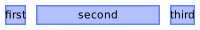
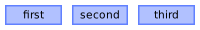
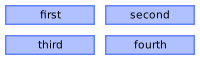
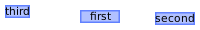

The Widget system
This document explains how to define, place and manage widgets.
The default configuration
This is what the widgets present in the default configuration are named:
The default widgets
Widgets
Awesome provides 2 collections of widgets:
- wibox.widget: Generic widgets, containers and layouts
awful.widget: The Awesome specific widgets


Containers
A container is a widget that wraps another widget. It can be used to add decorations or to modify the content of the child widget.


Layouts
Layouts are collections of children widgets. They are placed according to configurable rules.
| Name | Example |
|---|---|
| wibox.layout.align |  |
| wibox.layout.fixed | |
| wibox.layout.flex |  |
| wibox.layout.grid |  |
| wibox.layout.manual |  |
| wibox.layout.ratio |  |
| wibox.layout.stack |  |
Awful widgets
This module contains the higher level window manager widgets. Since most of them are used by the default config, here is how it maps:


Titlebar widgets
The titlebar comes with some convenient default widgets. It simplifies the most basic “Windows/macOS” like titlebars.
Note that titlebars can also be added on each side. This is how “active” titlebars (click to resize) can be implemented. The default rc.lua does not add active borders:

| Widget | Description |
|---|---|
awful.titlebar.widget.iconwidget | The client icon (see client.icon) |
awful.titlebar.widget.titlewidget | The client title (see client.name) |
awful.titlebar.widget.floatingbutton | Toggle the floating (toggled) vs. tiling mode (untoggled). |
awful.titlebar.widget.maximizedbutton | Toggle the maximized mode (toggled). Note that this is the "full" maximized mode, not vertical or horizontal maximization. See client.maximized. |
awful.titlebar.widget.stickybutton | When toggled, a client will be displayed in all (screen) tags. See client.sticky) |
awful.titlebar.widget.ontopbutton | When toggled, the client will be part of the ontop layer (see client.ontop). |
awful.titlebar.widget.closebutton | |
titlebar.widget.minimizebutton |
Notification widgets
Notifications also have their own widgets.

More information about the notification widgets can be found on the naughty.notification documentation page.
The different type of widget boxes (Wibox)
The Awesome API uses the word “wibox” (widget box) to describe an area of the screen filled with widgets. There are many subvariants of wiboxes with specialized roles such as widget bars or tooltips. All variants mostly share the same characteristics, but add some extra features to make those specialized widget boxes easier to work with.
The normal wibox is the base class for each of these types. It is extremely flexible and allows to place just about anything on the screen. However it requires a lot of repetitive boilerplate code to use directly. For example, the user needs to compute the optimal size by hand or use awful.placement.
The awful.wibar specialization allows to attach a wibox to a screen edge and prevents clients from using this area when tiled.
The awful.popup allows to easily place widgets on the screen. It automatically resizes itself to fit the optimal widget size. It also has helper properties and methods to make it easy to place it on the screen. It supports absolute positioning, relative positioning, and manual positioning.
The awful.tooltip is a very simple wibox that allows to display text next to an object such as the mouse.
The naughty.layout.box allows to provide custom widgets to use within the notifications.
The awful.wallpaper provides a non-interactive “backgroud” for one or more screen. While it uses normal widget, it will not automatically be repainted if they change. It will also not provide any mouse events.
Finally, the awful.titlebar, while not technically a real wibox, acts exactly the same way and allows to attach widgets on each side of clients.
The different syntaxes to initiate widgets
Awesome provides 2 totally different API access styles to manage widgets. Both suit different use cases. Under the hood, both produce the exact same code. Consider the declarative API to be compiled into the imperative syntax when loaded. Also note that in contrast to technologies such as QML, it is interpreted only once and isn’t automatically updated when values change.
The imperative widget initialization is similar to QtWidgets, GTK and Win32. You create the object, then set the property and add the widget as a child to another already declared widget. It is quite simple to use but very verbose and full of boilerplate code. The imperative API also offers properties both with accessors or directly. It is useful when creating highly dynamic layouts where widgets are added and removed over the course of their lifecycle.
The declarative syntax resembles HTML style code written in JSON or YAML. The widget instances are created automatically and the hierarchy is related to the table nesting (indentation). It is preferred when creating static layouts that won’t change over the course of their lifecycle.
Here is the same code written in both the imperative and declarative style
Imperative with accessors
Code:
local bg = wibox.container.background() bg:set_bg("#ff0000") local tb1 = wibox.widget.textbox() local tb2 = wibox.widget.textbox("bar") tb1:set_text("foo") tb2:set_text("bar") local l = wibox.layout.fixed.vertical() l:add(tb1) l:add(tb2) bg:set_widget(l)
Imperative with properties
Code:
local bg = wibox.container.background() bg.bg = "#ff0000" local tb1 = wibox.widget.textbox("foo") local tb2 = wibox.widget.textbox("bar") tb1.text = "foo" tb2.text = "bar" local l = wibox.layout.fixed.vertical() l:add(tb1) l:add(tb2) bg.widget = l
Declarative
Code:
local bg = wibox.widget { { { text = "foo", widget = wibox.widget.textbox }, { text = "bar", widget = wibox.widget.textbox }, layout = wibox.layout.fixed.vertical }, bg = "#ff0000", widget = wibox.container.background }
The Awesome documentation mostly uses the declarative style for consistency, but both are always available. Note that each style can be mixed with other styles, but this creates very confusing code and should be avoided.
Creating and placing widgets using the declarative style
The examples below explain in detail how to use the declarative layout system. The imperative system is quite self-explanatory and the respective widget API documentation should be enough for most.
A simple layout
- Display
my_first_widgetonly on primary screen - Display
my_second_widgetonly on screen two - Add a background color to
my_fourth_widget - Dispose in a wibox.layout.fixed.horizontal layout
Code:
s.mywibox : setup {
{
layout = awful.widget.only_on_screen,
screen = "primary", -- Only display on primary screen
my_first_widget,
},
{
layout = awful.widget.only_on_screen,
screen = 2, -- Only display on screen 2
my_second_widget,
},
my_third_widget, -- Displayed on all screens
{ -- Add a background color/pattern for my_fourth_widget
my_fourth_widget,
bg = beautiful.bg_focus,
widget = wibox.container.background,
},
layout = wibox.layout.fixed.horizontal,
}
This example uses the awful.widget.only_on_screen container to display widgets only on some screens.
Composite widgets
-- The progressbars will be on top of each other local mycpubar1 = wibox.widget { { value = 0.2, color = grad1, widget = wibox.widget.progressbar }, { value = 0.4, color = grad2, widget = wibox.widget.progressbar }, { value = 0.6, color = grad3, widget = wibox.widget.progressbar }, layout = wibox.layout.flex.vertical, } -- Now, add a rotate container, the height will become the width. -- It act as if the wibox.layout.flex.vertical was -- wibox.layout.flex.horizontal local mycpubar2 = wibox.widget { { { value = 0.2, color = grad1, widget = wibox.widget.progressbar }, { value = 0.4, color = grad2, widget = wibox.widget.progressbar }, { value = 0.6, color = grad3, widget = wibox.widget.progressbar }, layout = wibox.layout.flex.vertical, }, direction = 'east', widget = wibox.container.rotate }
Define widgets inline and place them
- Create a wibox.widget.textbox with various properties
- Force the textbox size using
wibox.layout.constraint - Add a margin around another textbox
- Add a wibox.container.background (for visualization)
Code:
s.mywibox : setup {
{
-- Force the textbox to always be 300 pixel long
{
{
markup = "<b>Hello World!</b>",
halign = "center",
widget = wibox.widget.textbox
},
bg = "#ff0000",
widget = wibox.container.background,
},
width = 300,
strategy = "min",
layout = wibox.layout.constraint
},
{
-- Add a border around the background
{
{
markup = "Foobar",
widget = wibox.widget.textbox
},
bg = "#0000ff",
widget = wibox.container.background
},
left = 10,
right = 10,
top = 1,
bottom = 2,
layout = wibox.container.margin
},
layout = wibox.layout.fixed.horizontal,
}
Result:

Use a wibox.layout.align layout
The wibox.layout.align is a little different. While most layouts will
ignore any nil lines, the align layout relies on them so left, middle
and right can be defined.
Code:
s.mywibox : setup {
my_textbox1, -- Left
nil, -- Nothing in the middle
my_textbox2, -- Right
layout = wibox.layout.align.horizontal,
}
Define new widgets
New trivial widgets can be created directly in the layout declaration. Here is a simple circle widget:
Code:
s.mywibox : setup {
fit = function(self, context, width, height)
return height, height -- A square taking the full height
end,
draw = function(self, context, cr, width, height)
cr:set_source_rgb(1, 0, 0) -- Red
cr:arc(height/2, height/2, height/2, 0, math.pi*2)
cr:fill()
end,
layout = wibox.widget.base.make_widget,
}
Result:

For more information about how to draw widgets, refer to the Cairo API:
Externally defined widgets and layouts
This is useful when the widget is provided by an external module or when it requires complex manipulations which would make the declaration unreadable.
Code:
local tb = wibox.widget.textbox() tb:set_markup("Hello world! ") -- Repeat "tb" 3 times s.mywibox : setup { tb, tb, tb, layout = wibox.layout.fixed.horizontal, }
Accessing widgets
For each widget or container, it is possible to add an identifier attribute
so that it can be accessed later.
Widgets defined using setup can be accessed using these methods:
- Avoiding the issue by using externally created widgets
- Using
my_wibox.my_first_widget.my_second_widgetstyle access - Using JavaScript like
my_wibox:get_children_by_id("my_second_widget")[1]
The first method mixes the imperative and declarative syntax, and makes the code less readable. The second is a little verbose and only works if every node in the chain has a valid identifier. The last one doesn’t require long paths, but it is not easy to get a specific instance if multiple widgets have the same identifier.
WARNING: The widget identifier must not use a reserved name. This includes all
method names, existing widget attributes, layout and widget. Names should
also respect the Lua variable conventions (case-sensitive, alphanumeric,
underscore characters and non-numeric first character).
Code:
s.mywibox : setup {
{
id = "second",
widget = wibox.widget.textbox
},
{
id = "third",
widget = wibox.widget.textbox
},
id = "first",
layout = wibox.layout.fixed.horizontal,
}
s.mywibox.first.second:set_markup("changed!")
s.mywibox:get_children_by_id("third")[1]:set_markup("Also changed!")
Extending the system
This system is very flexible. Each section attribute (the entries with string
keys) is directly linked to the layout or widget API. When setting the
imaginary myproperty, it will first check if set_myproperty exists. If it
doesn’t, it will check if there is a myproperty method. Finally, it will
just set the mywidget.myproperty directly in case it is used later or
caught by a Lua metatable (operator overload).
Code:
-- "Monkeypatch" a new function to 3 widget classes to add vicious -- extension support for _, wdg in ipairs { wibox.widget.textbox , wibox.widget.progressbar, wibox.widget.graph } do function wdg:vicious(args) local f = unpack or table.unpack -- Lua 5.1 compat vicious.register(self, f(args)) end end s.mywibox : setup { { vicious = {vicious.widgets.cpu, "CPU: $1%", 3}, widget = wibox.widget.textbox }, layout = wibox.layout.fixed.horizontal, }
In this example, the system is extended so that the popular Vicious extension module can be used directly in the layout declaration. This example will update the textbox every 3 seconds to show the CPU usage.
Handling sections
The system allows sections to be defined externally, then composed into the final layout declaration. Here is an example re-using one of the above example:
Code:
local circle = { fit = function(self, context, width, height) return height, height -- A square taking the full height end, draw = function(self, context, cr, width, height) cr:set_source_rgb(1, 0, 0) -- Red cr:arc(height/2, height/2, height/2, 0, math.pi*2) cr:fill() end, layout = wibox.widget.base.make_widget, } -- Define a layout with the imperative syntax local l = wibox.widget.align() -- 3 circle s.mywibox : setup { circle, circle, circle, l, layout = wibox.layout.align.horizontal } -- This can be done instead local three_circle = {layout = wibox.layout.align.horizontal} for i=1, 3 do table.insert(three_circle, circle) end s.mywibox : setup (three_circle)
Instantiation rules
Whenever it can, Awesome tries to be asynchronous. This can take various form
depending on the situation. For example, the connect_signal method allows to
execute code when an event arrives. awful.screen.connect_for_each_screen also
allows to instantiate various elements when a new screen is added. In the later
case, it is why some widgets are added as properties to other objects instead of
being global variables like in previous versions of Awesome.
However, there is a case where this isn’t enough and another abstract widget has
to be used. This concept is called the widget_template and is an optional
property of many widgets such as the awful.widget.taglist,
awful.widget.tasklist and naughty.layout.box. These templates are a
table using the exact same syntax as the declarative widgets, but without
the wibox.widget prefix in front of the curly braces. These templates
represent future widgets that will be created by their parent widget. This is
necessary for three reasons:
- The widget must create many instances of the template at different points in time.
- The widget data is only partially available and other fields must be set at a later time (by the parent widget).
- The code is highly redundant and some of the logic is delegated to the parent widget to simplify everything.